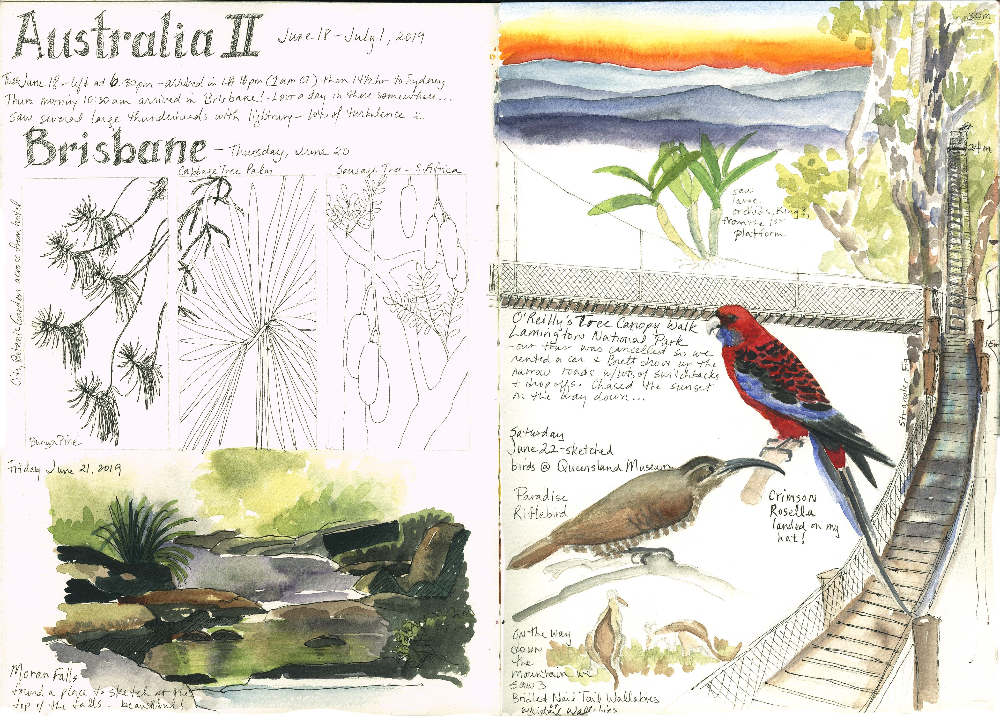

When I travel, I use a separate sketchbook to record places, buildings, plants, creatures and anything that stands out to me that I want to remember. Sometimes I have time to sketch it in the moment, other times I sketch it later in the hotel or even back home. I use Micron pens, graphite pencils and watercolor for most of my sketches with the occasional white gel pen or white acryla gouache if I’ve covered over some highlights.
This past June, my husband and I traveled to Australia before the 2019 GNSI (Guild of Natural Science Illustrators) conference I was to attend. We flew in to Brisbane and stayed in a hotel across the street from the City Botanic Gardens. The next day we drove up to O’Reilly’s Tree Canopy Walk in Lamington National Park, a subtropical rainforest. I got in a sketch at the top of Moran Falls, a peaceful place that was backlit in the sun.
Time got away from us and we were chasing the sunset all the way down the mountain which was challenging, considering we were driving on the opposite side than we were used to.
The next morning we spent some time at the Natural History Museum and I sketched some of the birds that I’d seen the day before. My husband enjoyed the space exploration part of the museum.
Since I last posted, we’ve had winter weather in November, with record snows, and November weather in December. Mother Nature seems confused!
After our heavy snow melted, the prairie was flattened which made interesting patterns.
Both of the previous sketches were started plein air, but as it was very cold, they were finished inside.
One weekend my husband and I visited Midewin National Tallgrass Prairie to see the bison. We really weren’t confidant that we could find them as they have 1200 acres on which to roam. They were introduced to the area in 2015 to study their impact on prairie restoration efforts. As we turned the corner though, we found them grazing in the distance. It was a beautiful scene and reminiscent of what it might have been like in the past.
After seeing the bison from afar, I wanted to sketch them up close and was able to do that at the Field Museum in Chicago.
Northern Harriers also winter in the prairie so I sketched them as well.
It’s been interesting to focus on other aspects of the prairie besides plants and I’m looking forward to seeing where this prairie journey takes me next. Hope you all have a joyous Christmas and a Happy New Year! Enjoy!